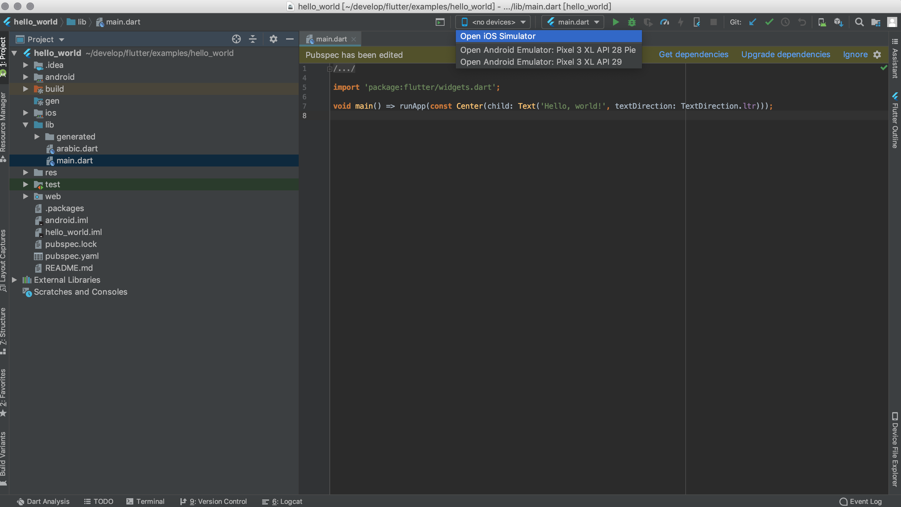

~ vi ~/.bash_profile #增加如下,根据你实际的位置进行配置 #flutter export PATH=/Users/xxx/develop/flutter/bin:$PATH source ~/.bash_profile #验证 flutter --version ╔════════════════════════════════════════════════════════════════════════════╗ ║ A new version of Flutter is available! ║ ║ ║ ║ To update to the latest version, run "flutter upgrade". ║ ╚════════════════════════════════════════════════════════════════════════════╝
Flutter 1.5.4-hotfix.2 • channel stable • https://github.com/flutter/flutter.git Framework • revision 7a4c33425d (2 months ago) • 2019-04-29 11:05:24 -0700 Engine • revision 52c7a1e849 Tools • Dart 2.3.0 (build 2.3.0-dev.0.5 a1668566e5) #提示我更新，我当时安装的是1.5.4,更新完成再次验证，更新会花点时间，使用下面的命令行走代理，或者全局也可以，根据实际情况配置 export https_proxy=http://127.0.0.1:1087; export http_proxy=http://127.0.0.1:1087; export all_proxy=socks5://127.0.0.1:1086 #运行doctor 检测配置，第一次安装需要安装额外的几个包，按照提示安装即可 Running flutter doctor... Doctor summary (to see all details, run flutter doctor -v): [✓] Flutter (Channel stable, v1.7.8+hotfix.3, on Mac OS X 10.14.5 18F132, locale zh-Hans-CN) [!] Android toolchain - develop for Android devices (Android SDK version 28.0.3) ! Some Android licenses not accepted. To resolve this, run: flutter doctor --android-licenses [!] Xcode - develop for iOS and macOS (Xcode 10.2.1) ! CocoaPods out of date (1.6.0 is recommended). CocoaPods is used to retrieve the iOS and macOS platform side's plugin code that responds to your plugin usage on the Dart side. Without CocoaPods, plugins will not work on iOS or macOS. For more info, see https://flutter.dev/platform-plugins To upgrade: brew upgrade cocoapods pod setup [!] iOS tools - develop for iOS devices ✗ ios-deploy not installed. To install: brew install ios-deploy [✓] Android Studio (version 3.4) [!] IntelliJ IDEA Ultimate Edition (version 2019.1.3) ✗ Flutter plugin not installed; this adds Flutter specific functionality. ✗ Dart plugin not installed; this adds Dart specific functionality. [!] VS Code (version 1.35.1) ✗ Flutter extension not installed; install from https://marketplace.visualstudio.com/items?itemName=Dart-Code.flutter [!] Proxy Configuration ! NO_PROXY is not set [!] Connected device ! No devices available ! Doctor found issues in 7 categories. #第一次安装，需要安装下面的包，brew 的使用可用搜我之前发的文章 brew update brew install --HEAD usbmuxd brew link usbmuxd brew install --HEAD libimobiledevice brew install ideviceinstaller
进入flutter的目录
1 2 3 4 5 6 7 8 9 10 11 12 13 14 15 16 17
~ tree -L 1 . ├── AUTHORS ├── CODE_OF_CONDUCT.md ├── CONTRIBUTING.md ├── LICENSE ├── PATENTS ├── README.md ├── analysis_options.yaml ├── bin ├── dartdoc_options.yaml ├── dev ├── examples ├── flutter_console.bat ├── flutter_root.iml ├── packages └── version
在目录中看到有个examples-helloworld 里面有对应的示例，使用Android Studio 打开： ,选择对应的模拟器，Android 的和iOS 都可以，也可以使用真机，然后点击右上角运行即可 使用29的API会出现如下错误：
1
Error connecting to the service protocol: HttpException: Connection closed before full header was received, uri = http://127.0.0.1:53668/CCQP0ed9oCM=/ws